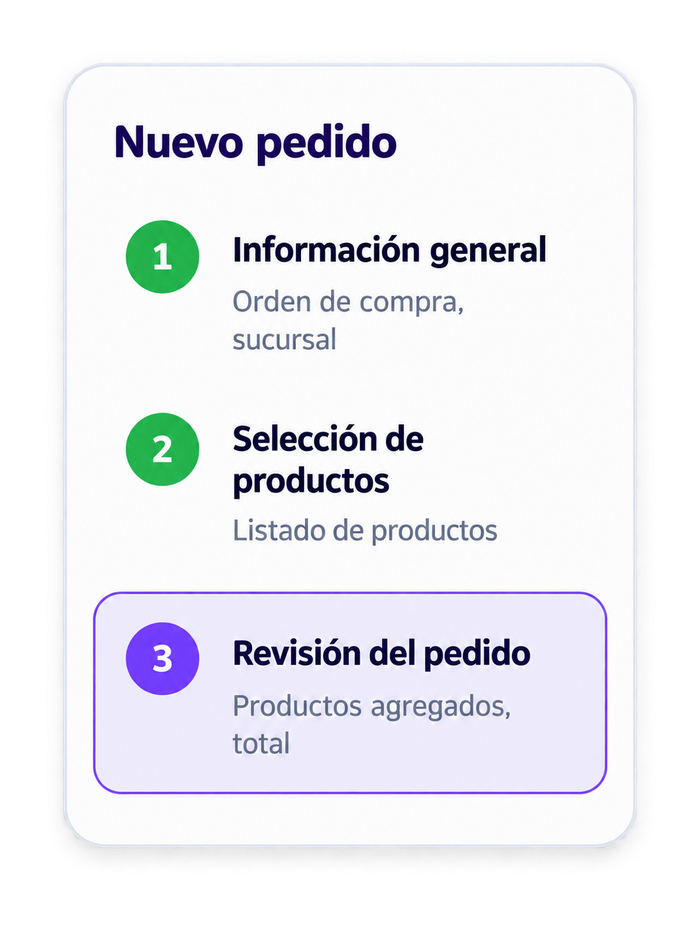
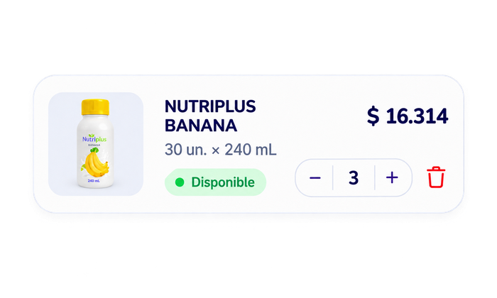
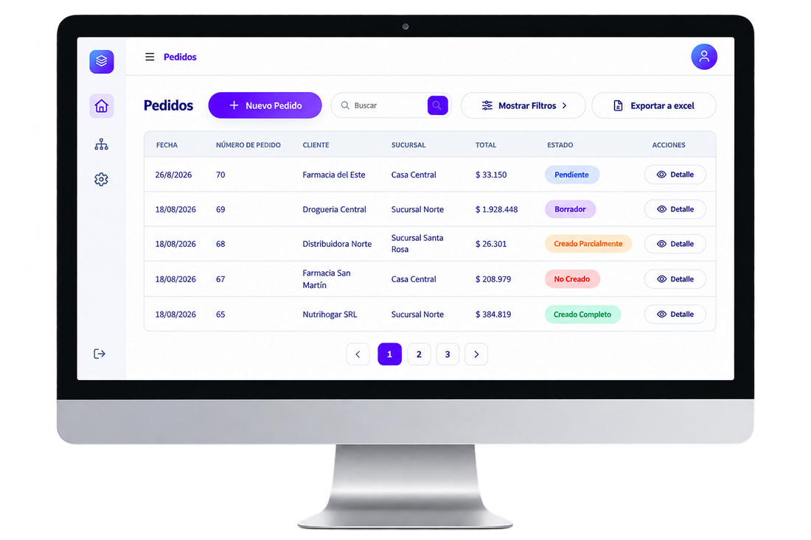
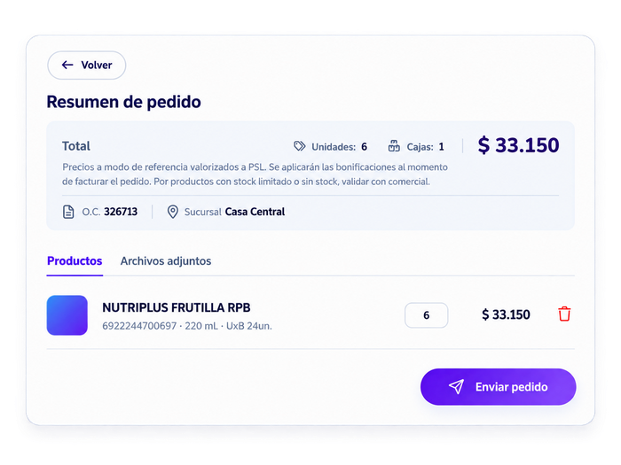
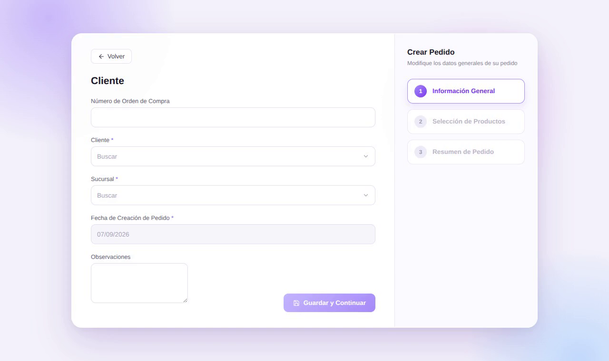
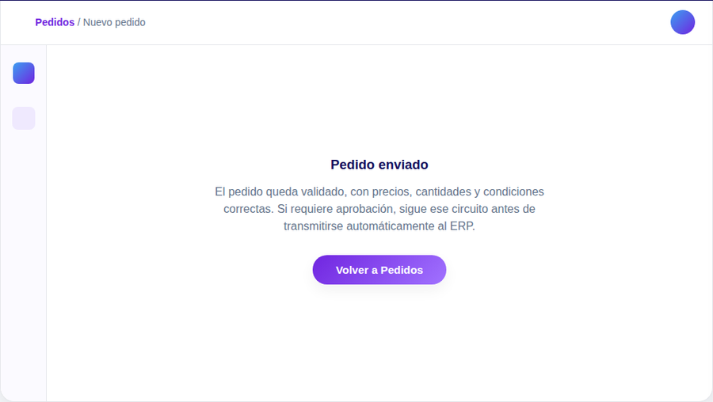

Vende sin fricción
Carga pedidos desde cualquier dispositivo, con precios y stock siempre al día.
Gestión de pedidos · QuartzSales
Cargá pedidos desde el punto de venta o el equipo comercial y seguilos, en vivo, hasta que quedan transmitidos — sin doble carga ni planillas sueltas.




Por qué cambia el día a día
Eso es lo primero que se nota: lo que antes eran dos o tres pasos sueltos — anotar, pasar en limpio, cargar en el sistema — pasa a ser uno solo, controlado de punta a punta.
Lo que entra por el pedido sale directo hacia el ERP: nadie lo vuelve a tipear.
Cada pedido respeta precios, stock y condiciones comerciales antes de avanzar.
Equipo comercial, clientes y administración trabajan sobre el mismo pedido, no sobre copias.
Conectado en vivo con tu ERP: precios y stock están siempre al día.
Seguí el estado de cada pedido, del primer clic a la confirmación.

Cliente, sucursal, productos y cantidades. El carrito se arma solo mientras vos seguís vendiendo.

El sistema empieza a controlar todo esto por vos.
Precio, stock disponible y condiciones comerciales — cada línea se revisa antes de avanzar.
Nada pasa a la siguiente etapa sin que las reglas se cumplan.
Un descuento fuera de rango dispara una excepción y el pedido pide aprobación. Ni se pierde ni se frena solo: alguien lo revisa y el sistema sigue.
⚠ Excepción: requiere aprobación

El momento en que todo conecta
El pedido validado y aprobado se transmite solo. Nada se reescribe del otro lado del ERP.

Resolución
El pedido #4821 queda confirmado, trazable y disponible para todos los que lo necesitan tocar después.

Un mismo sistema, distintos roles
El mismo pedido, visto desde donde cada uno lo necesita.
Carga pedidos desde cualquier dispositivo, con precios y stock siempre al día.
Ve el estado real de su pedido, sin llamar a preguntar si ya salió.
Revisa excepciones y confirma transmisiones sin perseguir planillas.
De la carga a la confirmación en el ERP, sin planillas sueltas ni doble trabajo.